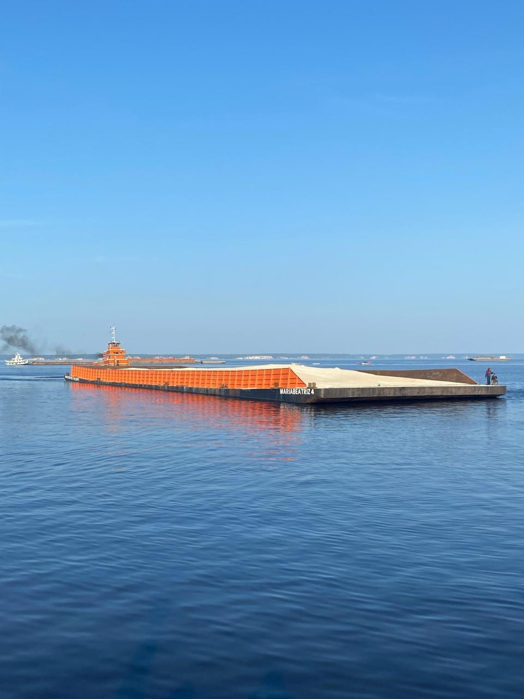
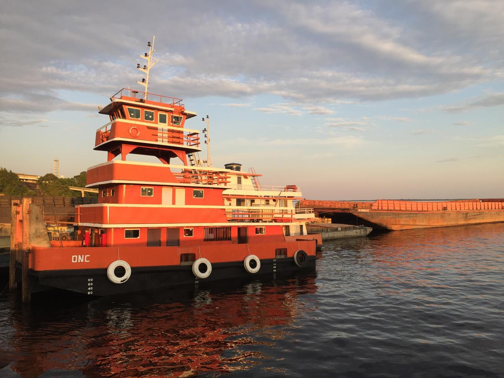

Informe de onde a carga sai e para onde precisa seguir.
Transporte e apoio operacional
Fretes fluviais e apoio logístico para cargas na Amazônia.
Envie origem, destino, tipo de carga, volume e prazo. A ONC avalia a melhor forma de movimentar materiais, insumos e demandas operacionais por rotas nacionais e internacionais.
Como funciona
Da rota ao embarque, o atendimento começa com quatro informações simples.
Esses dados ajudam a equipe a entender a operação, avaliar possibilidade logística e orientar o melhor encaminhamento.
Descreva material, insumo, equipamento ou demanda operacional.
Indique quantidade, peso aproximado ou dimensão da carga.
Compartilhe janela de coleta, entrega ou necessidade da operação.
Operação fluvial estruturada para transformar demanda em rota viável.
A ONC Navegação e Logística conecta experiência de campo, embarcações e acompanhamento comercial para atender clientes que precisam movimentar cargas, materiais, insumos e equipamentos em ambiente amazônico.
- Fretes fluviais para cargas de obra, materiais, equipamentos e demandas operacionais.
- Apoio logístico para empresas, fornecedores, operações industriais e frentes no Brasil e países vizinhos.
- Organização de rota, prazo, janela de atendimento e necessidade de apoio no destino.
- Integração com a estrutura naval, comercial e operacional do Grupo ONC.
Capacidades
Serviços pensados para quem precisa tirar a carga do plano e colocar na rota.
Movimentação fluvial de insumos, suprimentos, estruturas e cargas de apoio.
Atendimento para frentes que dependem de entrega, retirada ou suporte recorrente.
Encaminhamento de demandas ligadas a equipamentos, manutenção e abastecimento.
Avaliação de origem, destino, volume, prazo e melhor possibilidade de operação.

Transporte fluvial
Frete, apoio e operação no ritmo da rota.
Quando a demanda exige deslocamento por rio, a ONC organiza o atendimento para entender carga, ponto de origem, destino e prazo antes de indicar o melhor caminho operacional.
Operação
Estrutura fluvial para transporte, apoio e movimentação de cargas.


Contato
Solicite cotação para frete fluvial.
Envie origem, destino, tipo de carga, volume estimado e prazo desejado para a equipe avaliar o melhor encaminhamento.
Localização
Base operacional em Iranduba-AM para apoio à navegação, fretes e demandas logísticas fluviais.